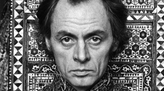

HISTORIA
A lo largo de los siglos, la psicología ha avanzado, pero fue el movimiento de antipsiquiatría de Laing y Cooper el que realmente cambió el enfoque hacia los derechos civiles de los pacientes psiquiátricos. La esquizofrenia, un trastorno grave originado por una ruptura en el fenómeno psíquico, ha sido históricamente mal comprendida y estigmatizada. Desde una perspectiva tanto psicológica como social, se caracteriza por síntomas debilitantes como alucinaciones y delirios.
Lo más desafortunado es que, aunque la esquizofrenia es una de las enfermedades mentales más estudiadas, sus causas siguen siendo en gran medida desconocidas. Este trastorno se considera multifactorial, lo que significa que sus orígenes se encuentran en una compleja interacción de factores biológicos, psicológicos y sociales. En 1952, con el descubrimiento de la clorpromazina, se marcó un avance importante en el tratamiento de la esquizofrenia. Este medicamento, que bloquea ciertos receptores cerebrales, ha sido fundamental en el control de los síntomas, aunque su efecto es lento. Sin embargo, la búsqueda de tratamientos más eficaces no ha cesado. Hoy, gracias a estos avances, las personas con esquizofrenia pueden llevar una vida más funcional y participar en actividades diarias, mejorando así su calidad de vida.
